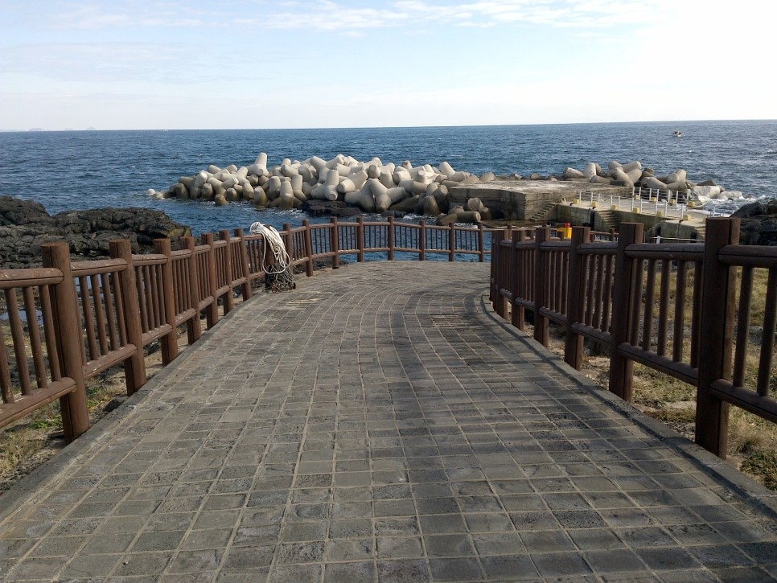

관광지
마라도
난대성 해양 동식물이 풍부하고 경관이 아름다운 유인도 중에 국토 최남단인 섬

천연기념물 제423호
한국 최남단의 섬으로 면적 약 9만평, 최장길이 약 1.3km, 모슬포에서 남쪽으로 11km 해상에 위치한다. 운진항에서 배를 타고 30분 정도 소요되는데, 정기 여객선과 관광 유람선이 하루 수 차례 왕복 운항하고 있다. 마라도는 위에서 보면 고구마 형태를 띠고 있으며, 전체적으로 평평하나, 등대가 있는 동쪽으로는 해풍의 영향으로 기암절벽을 이룬다. 등대가 있는 가장 높은 곳이 약 해발 39m다. 서쪽 해안은 해식동굴이 발달되어 있으며 섬 중앙에서 서쪽 기슭에 마을이 자리잡고 있다. 주민들은 약 130여명(2015년 기준)으로, 주로 어업에 종사하나, 관광객이 늘어나면 민박을 겸하는 주민들이 많다.

마라도에는 원래 사람이 살지 않았으나, 영세 농어민 4,5세대가 당시 제주 목사로부터 개간 허가를 얻어 화전을 시작하면서부터 사람이 이주했다고 한다. 《탐라순력도》(1702)의 麻羅島(마라도:칡넝쿨이 우거진 섬)라는 표현에서도 알 수 있듯이 마라도는 본래 원시림이 울창한 숲이었는데, 화전민 개간으로 숲이 모두 불태워져 지금은 섬 전체가 낮은 풀로 덮혀있다. 푸르른 초원 군데군데 작은 건물이 서있으며, 가을에는 억새가 만발하는 장관을 볼 수 있다. 마라도의 가장 높은 지대에 자리한 마라도등대는 전 세계 해도에 꼭 기재되는 중요한 등대로, 이 지역을 항해하는 국제 선박 및 어선들에게 안내자의 역할을 한다. 등대 주변으로는 전세계 유명 등대를 모형으로 만들어 놓은 볼거리가 있다.


마라도는 섬 전체가 가파르지 않아 남녀노소 부담없이 거닐 수 있다. 섬 한바퀴를 다 도는데는 1-2시간이면 충분하다.
마라도에서는 무엇이건 모두 최남단이라는 수식어가 붙는데, 마라도성당과 기원정사 등 종교시설과 분교, 짜장면집까지 있다. 마라도의 남쪽 끝에는 최남단비가 있어 인증
사진을 찍는 사람들의 발길이 끊기지 않는다.


마라도에 도착해 섬의 시계 반대 방향으로 한 바퀴 돌 때, 제일 먼저 만나는 것은 ‘할망당’ ‘처녀당’ ‘비바리당’ 등으로 불리는 마라도의 본향당(本鄕堂) 당이
있다. 당이래야 돌담을 둥그렇게 쌓아두고 그 안에 제단을 마련한 것이 전부지만, 이곳에는 마라도의 잠녀들의 안녕을 지키고 뱃길을 무사히 열어주는 본향신이 모셔져
있다. 마을 사람들은 지금도 당이 있는 바위에 올라서면 바람이 세게 분다 하여 이를 금기 또는 신성시하고 있다.
'아기업개당'으로도 불리는 이 본향당에는 다음과 같은 전설이 전해 내려온다.
옛날 마라도에 사람이 살고 있지 않을 적에 마라도에는 해산물이 풍부하여 모슬포 잠녀들이 배에 식량을 싣고 와서 며칠 씩 물질을 하였다. 어느 해인가 모슬포 잠녀들이
아기와 아기를 돌보는 ‘애기업개’를 데리고 배로 마라도에 바다 일을 하러 왔다. 며칠 간의 바다 일을 마치고 돌아가려니까 바람이 세게 불고 파도가 거세어 삼사일간
나갈 수가 없어 굶어 죽을 판이 되었다. 그 날 밤 상군 잠녀의 꿈에 누군가 나타나 이르기를 애기업개를 놔두고 떠나야 섬을 무사히 빠져나갈 수 있다는 것이었다. 꿈이
사실인지 아닌지 모르지만 모두 굶어 죽을 판이라 사람들이 의논하여 꿈에 들은 대로 하기로 하였다. 애기업개를 어떻게 떼어 놓을까 하다가 모두 배에 타고서 애기업개에게
아기 옷을 두고 왔다고 하여, 가서 가져오라고 하였다. 애기업개가 배에서 내리자 바람이 잦아들어 배는 순조롭게 돌아올 수 있었다. 같이 데려가 달라며 손을 흔들고
발버둥을 치는 애기업개를 두고 온 사람들은 내내 마음에 애기업개를 담고 살아야만 했다. 애기업개의 애원을 뒤로 하고 돌아온 사람들이 해가 바뀌어 다시 마라도에
바릇잡이를 가보니 애기업개는 돌 엉덕(언덕)에 뼈만 앙상하게 남아 있었다. 애기업개에 대한 미안한 마음이 컸던 사람들은 그녀의 넋을 위로하기 위하여 고사를 지냈다.
그로부터 마라도를 찾는 잠녀들은 그 자리에 ‘애기업개당’을 짓고 해마다 당제를 지내게 되었다. 애기업개인 자신만을 두고 가서 굶어 죽게 한 사람들에게 원한이
있으련만, 원혼을 위로하는 제를 지내고, 해마다 당제를 지내니 마을의 본향당으로 자리를 잡아 마라도의 생활을 관장하는 당신(堂神)이 된 것이다.
지도

● 마라도가는여객선 (송악산 산이수동) ☎ 064 794 6661
● 아름다운섬나라 정기여객선 (운진항) ☎ 064 794 5490~3
휴 무 : 연중무휴 (선박검사, 기상여건 등 상황에따라 변동이 있을 수 있으므로 사전에 반드시 예약 확인하는것이 좋다.)
승선요금 : 왕복 기준
성인 18,000원, 청소년 17,800원, 어린이 9,000원, 만2~6세 8,500원, 복지카드1~3급 및 보호자1인 8,500원, 복지카드4~6급
13,600원, 만24개월 무임
소요시간 : 탑승시간 약 30분 + 체류시간 약 100~130분
문화 관광해설 : 없음
유모차 대여 : 2대(보증금 100,000원) - 운진항
부대시설 :
주 소 : 제주특별자치도 서귀포시 대정읍 송악관광로 424 (송악산) / 제주특별자치도 서귀포시 대정읍 최남단해안로 120 (운진항)
전화번호 : 064 794 6661 (송악산) / 064 794 5490 (운진항)
우도 여행 사진
-

마라도 선착장
-

탐방로
-

대한민국최남단비
-

등대와 성당
-

살레덕 선착장
리뷰
-

-
백**
2025.09.29
-
처음으로 둘이서 여행지. 가을의 제주에서 가을을 만끽하고 왔네요 :)
-
-
-
-
-
Par*********
2025.05.05
-
마라도에서 찍은 사진입니다. 마라도는 언제가도 아름답습니다.
-
-

-

-
완*****
2022.11.10
-
모로코에 8년간 살다가 잠시 한국에 온 친구와 제주에 다녀왔습니다 날씨가 좋지않아 배가 안뜰까 걱정했지만 다행스럽게도 마라도여행까지 목표달성!!! 친구는 정말 오랜만에 제주에 왔다며 즐거워했고 덕분에 다시 일상으로 복귀할 수 있는 힘을 얻었습니다 이번 제주여행은 추억여행이자 재충전의 시간이었어요 이렇게 힐링할 수있고 쉴수 있는 휴양지가 있어 너무 고맙네요 알 럽 제주♡
-